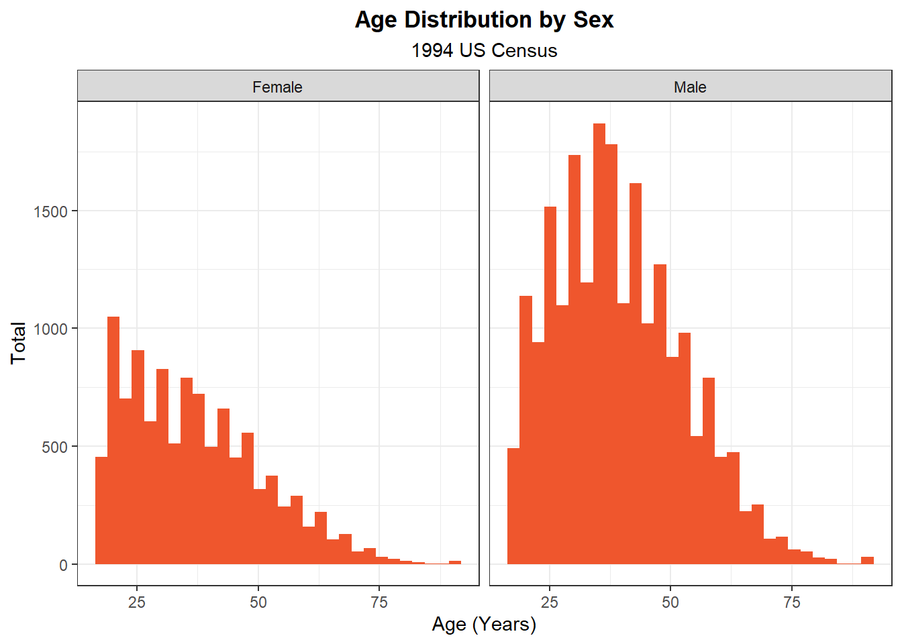
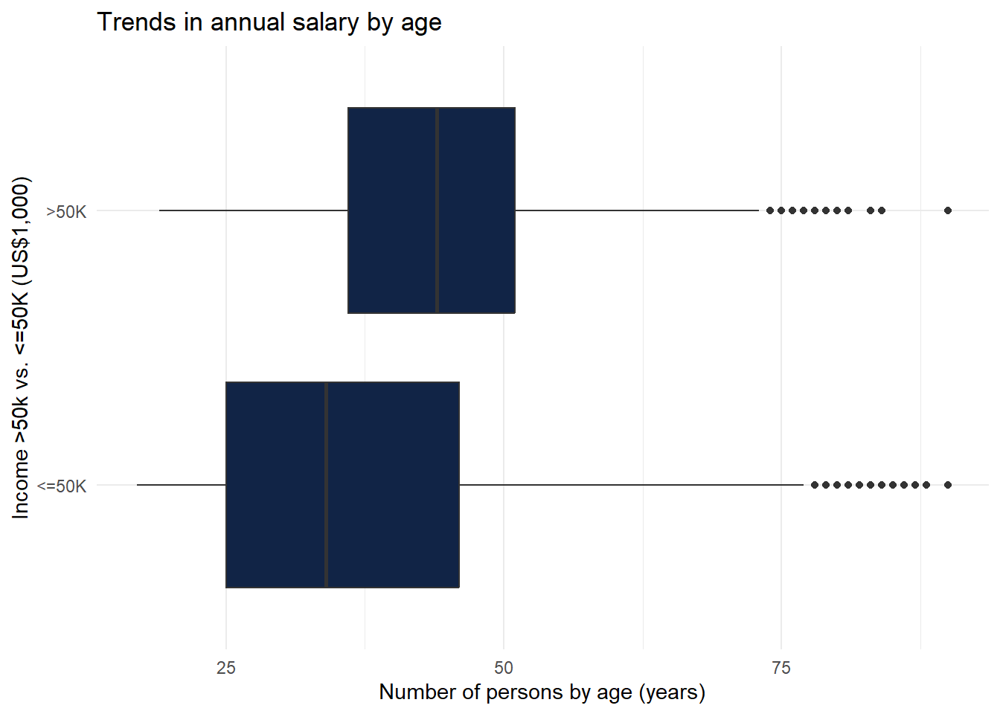
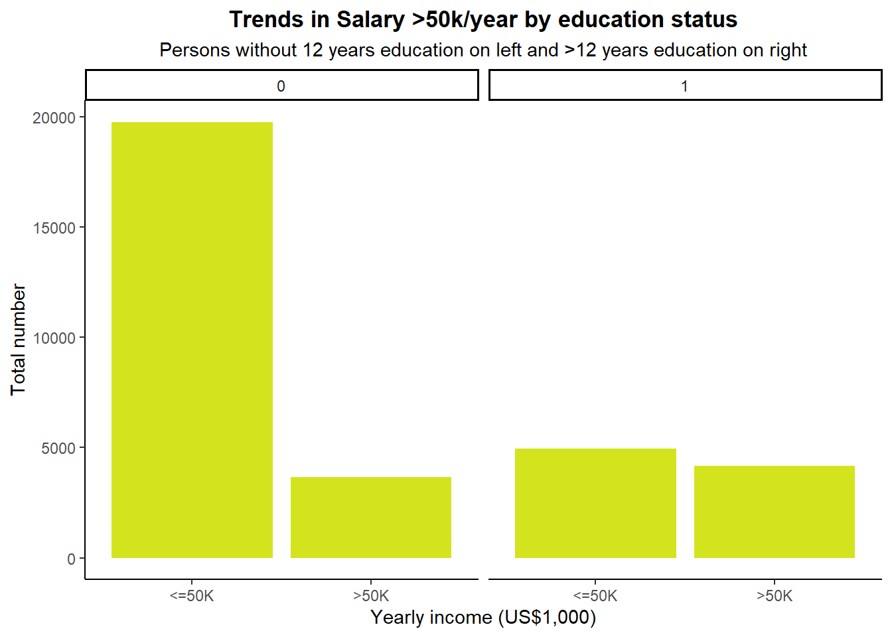

Example Analysis
A simple analysis to practice using Quarto
Welcome
Welcome to my data analysis page.
Some packages used in this project (full list at bottom)
tidyverse, esquisse, here, lubridate, ggplot2, leaflet, pacman, naniar
Goal
The goal of this page is to learn data wrangling and analysis skills using publicly available data. The question we will answer is does the likelihood of >$50,000 annual income change with various factors such as number of years of schooling, age, etc. We will use United States census data from 1994. The intended audience is for data scientists interested in using real world data to answer questions without extensive modeling or statistical experience.
Note
This is an example of how to create an academic website with analysis - the findings of the analysis are meant for demonstration purposes only.
Data Source
Image credit: (United States Department of Commerce 2008)
The information presented on this page is from the 1994 US Census which has been made publicly available at the UC Irvine Machine Learning Repository (Kohavi 1996).
Map of UC Irvine
Data dictionary
The data dictionary is here
Data Wrangling
Download the data here
Unzip the downloaded document and import the adult.data file using the readr package
adult <- read_csv("C:/Users/wgarnea1/Desktop/census+income/adult.data", col_names = FALSE)Let’s take a look at the various columns
glimpse(adult)Rows: 32,561
Columns: 15
$ X1 <dbl> 39, 50, 38, 53, 28, 37, 49, 52, 31, 42, 37, 30, 23, 32, 40, 34, 25…
$ X2 <chr> "State-gov", "Self-emp-not-inc", "Private", "Private", "Private", …
$ X3 <dbl> 77516, 83311, 215646, 234721, 338409, 284582, 160187, 209642, 4578…
$ X4 <chr> "Bachelors", "Bachelors", "HS-grad", "11th", "Bachelors", "Masters…
$ X5 <dbl> 13, 13, 9, 7, 13, 14, 5, 9, 14, 13, 10, 13, 13, 12, 11, 4, 9, 9, 7…
$ X6 <chr> "Never-married", "Married-civ-spouse", "Divorced", "Married-civ-sp…
$ X7 <chr> "Adm-clerical", "Exec-managerial", "Handlers-cleaners", "Handlers-…
$ X8 <chr> "Not-in-family", "Husband", "Not-in-family", "Husband", "Wife", "W…
$ X9 <chr> "White", "White", "White", "Black", "Black", "White", "Black", "Wh…
$ X10 <chr> "Male", "Male", "Male", "Male", "Female", "Female", "Female", "Mal…
$ X11 <dbl> 2174, 0, 0, 0, 0, 0, 0, 0, 14084, 5178, 0, 0, 0, 0, 0, 0, 0, 0, 0,…
$ X12 <dbl> 0, 0, 0, 0, 0, 0, 0, 0, 0, 0, 0, 0, 0, 0, 0, 0, 0, 0, 0, 0, 0, 0, …
$ X13 <dbl> 40, 13, 40, 40, 40, 40, 16, 45, 50, 40, 80, 40, 30, 50, 40, 45, 35…
$ X14 <chr> "United-States", "United-States", "United-States", "United-States"…
$ X15 <chr> "<=50K", "<=50K", "<=50K", "<=50K", "<=50K", "<=50K", "<=50K", ">5…Rename columns
new_names <- c("age", "working_status","fnlwgt","education_level","years_of_education","marital_status", "occupation","relationship_status","race", "sex","capital-gain","capital-loss","hours_worked","native_country","yearly_income")
colnames(adult)<-new_namesDrop certain columns
adult <- adult %>% select(!c('fnlwgt', 'capital-gain','capital-loss'))Drop rows with missing values for years of education
library(naniar)
adult <- adult %>% replace_with_na(replace = list(years_of_education = "?"))
adult <- adult %>% drop_na(starts_with("years"))Make a new variable (“ged”) for persons with more than 12 years of education or not
adult<-adult %>%
mutate(ged = ifelse(years_of_education >= 12, 1, 0)
)Make a new variable (“above50”) for persons with income >US $50,000/year
adult<-adult %>%
mutate(above50 = ifelse(yearly_income == ">50K", 1, 0)
)Results
Here are the results of the analysis
adult %>%
group_by(sex) %>%
summarise(mean = mean(age), n = n())# A tibble: 2 × 3
sex mean n
<chr> <dbl> <int>
1 Female 36.9 10771
2 Male 39.4 21790There are 21370 men in the data set with an average age of 39.4 years. There are 10608 women in the data with a mean age of 36.9. The age distribution is right-skewed for men and women (see Figure 1 below for age distribution plot.)
library(ggplot2)
ggplot(adult) +
aes(x = age) +
geom_histogram(bins = 30L, fill = "#EF562D") +
labs(
x = "Age (Years)",
y = "Total",
title = "Age Distribution by Sex",
subtitle = "1994 US Census"
) +
theme_bw() +
theme(
plot.title = element_text(face = "bold",
hjust = 0.5),
plot.subtitle = element_text(hjust = 0.5)
) +
facet_wrap(vars(sex))
ggplot(adult) +
aes(x = age, y = yearly_income) +
geom_boxplot(fill = "#112446") +
labs(x = "Number of persons by age (years)",
y = "Income >50k vs. <=50K (US$1,000)", title = "Trends in annual salary by age",)+
theme_minimal()
ggplot(adult) +
aes(x = yearly_income) +
geom_bar(fill = "#D3E41F") +
labs(x = "Yearly income (US$1,000)",
y = "Total number", title = "Trends in Salary >50k/year by education status", subtitle = "Persons without 12 years education on left and >12 years education on right") +
theme_classic() +
theme(plot.title = element_text(face = "bold", hjust = 0.5), plot.subtitle = element_text(hjust = 0.5)) +
facet_wrap(vars(ged))
The percentage of persons who have a salary that is less than $50,000 per year is much higher for persons without at least 12 years of schooling.
We can perform a t test to determine if there is a statistically significant relationship between education > 12 years and yearly income >50k. (Mishra et al. 2019)
t.test(adult$ged, adult$above50, paired = FALSE)
Welch Two Sample t-test
data: adult$ged and adult$above50
t = 11.553, df = 64961, p-value < 2.2e-16
alternative hypothesis: true difference in means is not equal to 0
95 percent confidence interval:
0.03297340 0.04644677
sample estimates:
mean of x mean of y
0.2805196 0.2408096 The p value < 0.05 suggesting that having >12 years education is associated with yearly income >US$50,000.These findings are very limited as the data is almost 30 years old and we did not perform any adjustment. We also did not study variance in the data or perform any modeling. Nonetheless, we have ample tools to study data within R and Quarto allows a researcher to share findings with ease!
References
Kohavi, Ron. 1996. “Census Income.” UCI Machine Learning Repository. https://doi.org/10.24432/C5GP7S.
Mishra, Prabhaker, Uttam Singh, ChandraM Pandey, Priyadarshni Mishra, and Gaurav Pandey. 2019. “Application of Student’s t-Test, Analysis of Variance, and Covariance.” Annals of Cardiac Anaesthesia 22 (4): 407. https://doi.org/10.4103/aca.ACA_94_19.
United States Department of Commerce. 2008. “Seal of US Department of Commerce Bureau of the Census.”
Functions used and session info
select drop_na glimpse mutate summarize
geom_boxplot geom_bar geom_histogram
options(width = 120)
sessioninfo::session_info()─ Session info ───────────────────────────────────────────────────────────────────────────────────────────────────────
setting value
version R version 4.3.0 (2023-04-21 ucrt)
os Windows 10 x64 (build 19044)
system x86_64, mingw32
ui RTerm
language (EN)
collate English_United States.utf8
ctype English_United States.utf8
tz America/New_York
date 2023-11-10
pandoc 3.1.1 @ C:/Program Files/RStudio/resources/app/bin/quarto/bin/tools/ (via rmarkdown)
─ Packages ───────────────────────────────────────────────────────────────────────────────────────────────────────────
package * version date (UTC) lib source
bit 4.0.5 2022-11-15 [1] CRAN (R 4.3.1)
bit64 4.0.5 2020-08-30 [1] CRAN (R 4.3.1)
bslib 0.5.1 2023-08-11 [1] CRAN (R 4.3.2)
cachem 1.0.8 2023-05-01 [1] CRAN (R 4.3.1)
cellranger 1.1.0 2016-07-27 [1] CRAN (R 4.3.1)
cli 3.6.1 2023-03-23 [1] CRAN (R 4.3.1)
colorspace 2.1-0 2023-01-23 [1] CRAN (R 4.3.1)
crayon 1.5.2 2022-09-29 [1] CRAN (R 4.3.1)
crosstalk 1.2.0 2021-11-04 [1] CRAN (R 4.3.2)
data.table 1.14.8 2023-02-17 [1] CRAN (R 4.3.1)
datamods 1.4.2 2023-09-26 [1] CRAN (R 4.3.2)
digest 0.6.33 2023-07-07 [1] CRAN (R 4.3.1)
dplyr * 1.1.3 2023-09-03 [1] CRAN (R 4.3.1)
ellipsis 0.3.2 2021-04-29 [1] CRAN (R 4.3.1)
esquisse * 1.1.2 2022-09-01 [1] CRAN (R 4.3.2)
evaluate 0.23 2023-11-01 [1] CRAN (R 4.3.2)
fansi 1.0.5 2023-10-08 [1] CRAN (R 4.3.2)
farver 2.1.1 2022-07-06 [1] CRAN (R 4.3.1)
fastmap 1.1.1 2023-02-24 [1] CRAN (R 4.3.1)
forcats * 1.0.0 2023-01-29 [1] CRAN (R 4.3.1)
generics 0.1.3 2022-07-05 [1] CRAN (R 4.3.1)
ggplot2 * 3.4.4 2023-10-12 [1] CRAN (R 4.3.2)
glue 1.6.2 2022-02-24 [1] CRAN (R 4.3.1)
gtable 0.3.4 2023-08-21 [1] CRAN (R 4.3.1)
here * 1.0.1 2020-12-13 [1] CRAN (R 4.3.2)
hms 1.1.3 2023-03-21 [1] CRAN (R 4.3.1)
htmltools 0.5.5 2023-03-23 [1] CRAN (R 4.3.1)
htmlwidgets 1.6.2 2023-03-17 [1] CRAN (R 4.3.1)
httpuv 1.6.12 2023-10-23 [1] CRAN (R 4.3.2)
jquerylib 0.1.4 2021-04-26 [1] CRAN (R 4.3.1)
jsonlite 1.8.7 2023-06-29 [1] CRAN (R 4.3.1)
knitr 1.45 2023-10-30 [1] CRAN (R 4.3.2)
labeling 0.4.3 2023-08-29 [1] CRAN (R 4.3.1)
later 1.3.1 2023-05-02 [1] CRAN (R 4.3.1)
leaflet * 2.2.0 2023-08-31 [1] CRAN (R 4.3.2)
lifecycle 1.0.4 2023-11-07 [1] CRAN (R 4.3.2)
lubridate * 1.9.3 2023-09-27 [1] CRAN (R 4.3.2)
magrittr 2.0.3 2022-03-30 [1] CRAN (R 4.3.1)
mime 0.12 2021-09-28 [1] CRAN (R 4.3.0)
munsell 0.5.0 2018-06-12 [1] CRAN (R 4.3.1)
naniar * 1.0.0 2023-02-02 [1] CRAN (R 4.3.2)
phosphoricons 0.2.0 2023-05-17 [1] CRAN (R 4.3.1)
pillar 1.9.0 2023-03-22 [1] CRAN (R 4.3.1)
pkgconfig 2.0.3 2019-09-22 [1] CRAN (R 4.3.1)
promises 1.2.1 2023-08-10 [1] CRAN (R 4.3.1)
purrr * 1.0.2 2023-08-10 [1] CRAN (R 4.3.2)
R6 2.5.1 2021-08-19 [1] CRAN (R 4.3.1)
Rcpp 1.0.11 2023-07-06 [1] CRAN (R 4.3.1)
reactable 0.4.4 2023-03-12 [1] CRAN (R 4.3.1)
readr * 2.1.4 2023-02-10 [1] CRAN (R 4.3.1)
readxl 1.4.3 2023-07-06 [1] CRAN (R 4.3.1)
rio 1.0.1 2023-09-19 [1] CRAN (R 4.3.2)
rlang 1.1.1 2023-04-28 [1] CRAN (R 4.3.1)
rmarkdown 2.25 2023-09-18 [1] CRAN (R 4.3.2)
rprojroot 2.0.4 2023-11-05 [1] CRAN (R 4.3.2)
rstudioapi 0.15.0 2023-07-07 [1] CRAN (R 4.3.1)
sass 0.4.7 2023-07-15 [1] CRAN (R 4.3.1)
scales 1.2.1 2022-08-20 [1] CRAN (R 4.3.1)
sessioninfo 1.2.2 2021-12-06 [1] CRAN (R 4.3.1)
shiny 1.7.5.1 2023-10-14 [1] CRAN (R 4.3.2)
shinybusy 0.3.1 2022-05-10 [1] CRAN (R 4.3.1)
shinyWidgets 0.8.0 2023-08-30 [1] CRAN (R 4.3.1)
stringi 1.7.12 2023-01-11 [1] CRAN (R 4.3.0)
stringr * 1.5.0 2022-12-02 [1] CRAN (R 4.3.1)
tibble * 3.2.1 2023-03-20 [1] CRAN (R 4.3.1)
tidyr * 1.3.0 2023-01-24 [1] CRAN (R 4.3.1)
tidyselect 1.2.0 2022-10-10 [1] CRAN (R 4.3.1)
tidyverse * 2.0.0 2023-02-22 [1] CRAN (R 4.3.2)
timechange 0.2.0 2023-01-11 [1] CRAN (R 4.3.1)
tzdb 0.4.0 2023-05-12 [1] CRAN (R 4.3.1)
utf8 1.2.4 2023-10-22 [1] CRAN (R 4.3.2)
vctrs 0.6.4 2023-10-12 [1] CRAN (R 4.3.2)
visdat 0.6.0 2023-02-02 [1] CRAN (R 4.3.2)
vroom 1.6.4 2023-10-02 [1] CRAN (R 4.3.2)
withr 2.5.2 2023-10-30 [1] CRAN (R 4.3.2)
writexl 1.4.2 2023-01-06 [1] CRAN (R 4.3.1)
xfun 0.39 2023-04-20 [1] CRAN (R 4.3.1)
xtable 1.8-4 2019-04-21 [1] CRAN (R 4.3.1)
yaml 2.3.7 2023-01-23 [1] CRAN (R 4.3.0)
[1] C:/Users/wgarnea1/AppData/Local/R/win-library/4.3
[2] C:/Program Files/R/R-4.3.0/library
──────────────────────────────────────────────────────────────────────────────────────────────────────────────────────